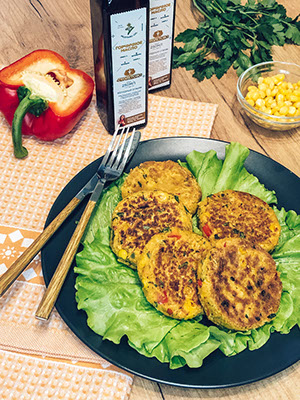
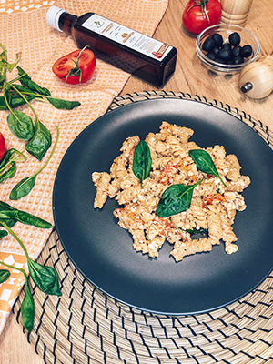

Рецепты блюд с горчичным маслом холодного отжима
Подробнее
В кулинарии горчичное масло применяют для жарки/тушения разного рода продуктов (мяса, рыбы,
овощей), для заправки мясных и овощных салатов, а также при выпечке хлеба (так называемый
«горчичный хлеб»).
Нутовые котлетки с овощами.

Что такое нутовая котлета - это, в первую очередь, отличное решение для тех,
кто постится или придерживается строгой вегетарианской диеты. Такое блюдо не
содержит в своем составе продуктов животного происхождения и является
низкокалорийным.
Ингредиенты:
- 300 гр готового нута (вареного или консервированного)
- 100 гр кукурузы
- 1/2 болгарского перца
- 1 маленькая луковица
- 1 зубчик чеснока
- 3 ст.л. рисовой муки
- 2 ст.л. петрушки порубленной
- 1,5 ст.л. сока лимона
- Специи( соль, тмин, орегано, куркума, паприка, чёрный перец) - по вкусу
- 2 ст.л. горчичного масло
- 1) Нут, лук, чеснок, специи и сок лимона измельчить в блендере в однородную массу.
- 2) Добавить к полученной массе кукурузу, мелко нарезанный перец, петрушку , муку и перемешать.
- 3) Разогреть на сковороде горчичное масло . Сформировать котлеты и обжарить с обеих сторон до румяности.
Паста с запеченными томатами-черрии и фетой

Не удивительно, что эта паста стала супер популярной: она нежная, кремовая,
очень вкусная и в то же время невероятно простая. Сыр и томаты сперва
целиком запекаются с маслом и специями, а затем смешиваются и превращаются в
сливочно-томатный соус. Обязательно приготовьте, оно того стоит!
Ингредиенты:
- Помидоры черри 600–700 г
- Горчичное масло 80 мл
- Фета 200–230 г
- Паста 250 г
- Чеснок 2 зубчика
- Специи ( базилик, орегано, соль, перец) по вкусу
- Свежий шпинат или базилик по вкусу
- 1) Разогрейте духовку до 200 °C.
- 2) В форму для запекания выложите помидоры.Освободите в середине место и поместите туда целый блок феты.
- 3) Полейте хорошенько маслом и посыпьте специями. Добавьте пару зубчиков чеснока. 🔸Запекайте черри и сыр 30 минут при 200 °C . Фета должна подрумяниться, а помидоры —полопаться и выделить сок.
- 4) Отварите пасту в подсоленной воде по инструкции. Сохраните 1–2 стакана жидкости из кастрюли, а остальное слейте, откинув макароны на дуршлаг.
- 5) Достаньте форму из духовки и сразу же хорошенько всё перемешайте. Вмешайте в соус свежий шпинат.
- 6) Переложите в соус пасту и ещё раз перемешайте. Если соус кажется слишком густым, добавьте немного жидкости, оставшейся после варки макарон. При подаче украсьте блюдо листиками шпината или базилика.